Sketch To Image
Workflows generate images from sketches using Flux (and SDXL).
Source: Pixaroma ComfyUI Tutorial Series: Ep20 - Sketch to Image Workflow with SDXL or Flux!
Sketch Preparation
- Load Image (sketch)
- Flux Resolution Calc: choose an aspect ratio
- Upscale Image and Crop
- Preview Image after Crop and Resize
- Image Filter Adjustment: adjust settings (brightness, saturation, contrast, edge enhance)
- Save Edited Image
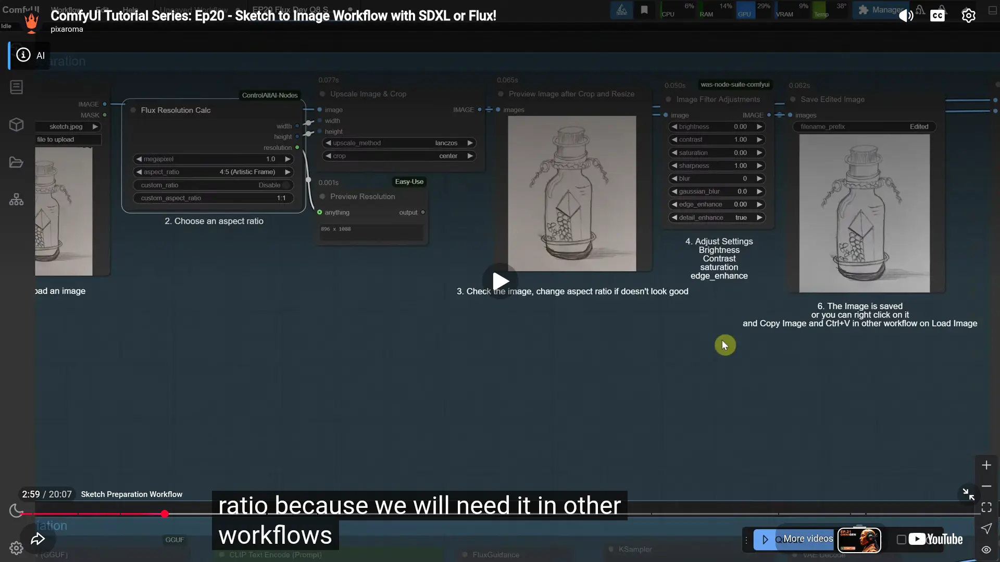
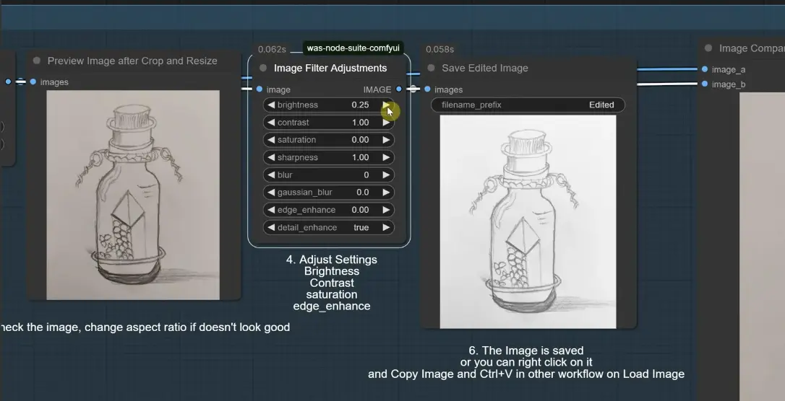
Image Variation
- Model and prompt
- Load Models
- Unet Loader (GGUF): flux.1-dev-Q8_0.gguf
- DualClipLoader (GGUF): i5-v1_1-xxl-encoder-Q8_0.gguf, clip-I.safetensors, type:flux
- ClipTextEncode (Prompt)
- FluxGuidance: guidance=3.5
- Image Prepare
- LoadImage
- Flux Resolution Calc
- Image Resize
- VAE encode
- KSampler
- denoise: higher(close to prompt), lower(close to reference/original image)
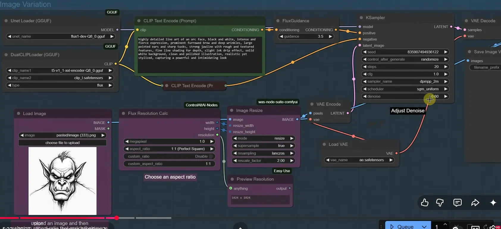
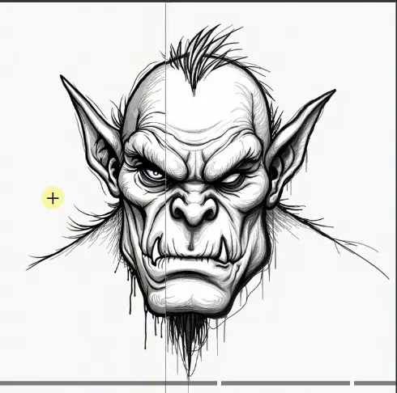
Sketch 2 Image
- Apply Controlnet
- Model and prompt
- Load Models
- Unet Loader (GGUF): flux.1-dev-Q8_0.gguf
- DualClipLoader (GGUF): i5-v1_1-xxl-encoder-Q8_0.gguf, clip-I.safetensors, type:flux
- ClipTextEncode (Prompt)
- FluxGuidance: guidance=3.5
- Prepare Latent
- Flux Resolution Calc
- EmptySD3LantentImage
- Model
- LoadModel: flux-dev-controlnet-union.safetensor
- Image Prepare
- LoadImage
- AIO Aux Preprocessor: CannyEdgeProcessor
- VAE encode
- parameters
- strength: 0.8 (0.3~1)
- end_percent: 0.3 (0.1~1)
- closer to 0 is more creative, closer to 1 matches original image better
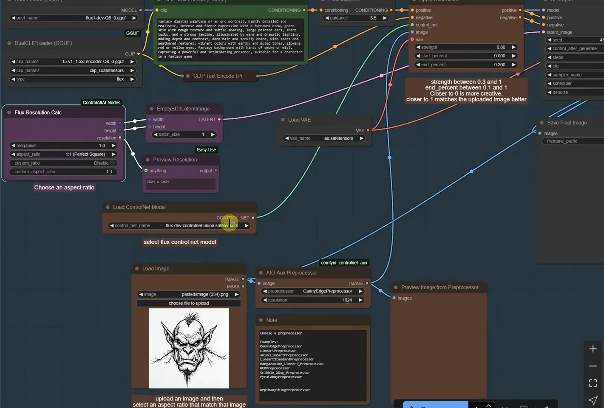
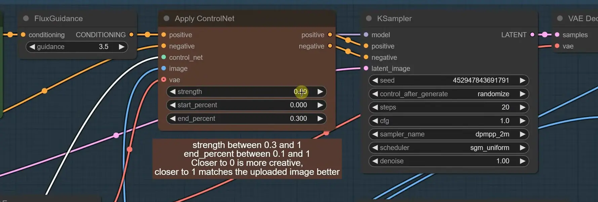
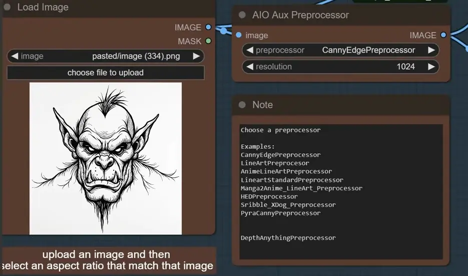
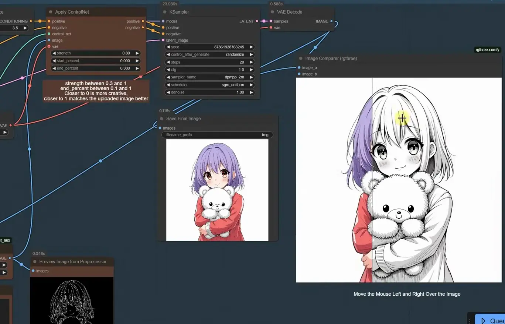
Draw Your Sketch 2 Image
In addition to load image, you can use canvas tab to create sketch in ComfyUI on the fly.
Note
- Install custom node Canvas Tab before start
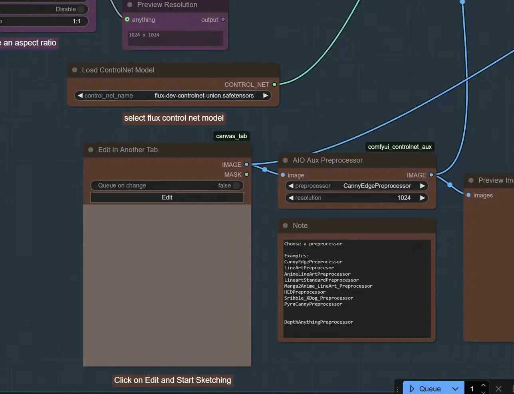
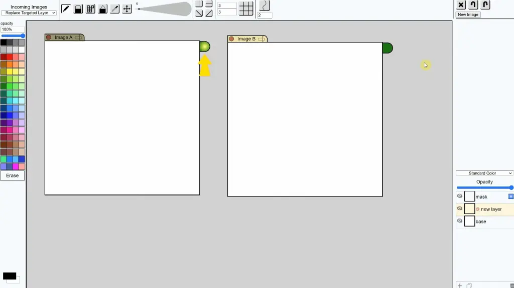
SDXL
All above workflows for Flux also apply to SDXL, simply load SDXL model and its ControlNet model.
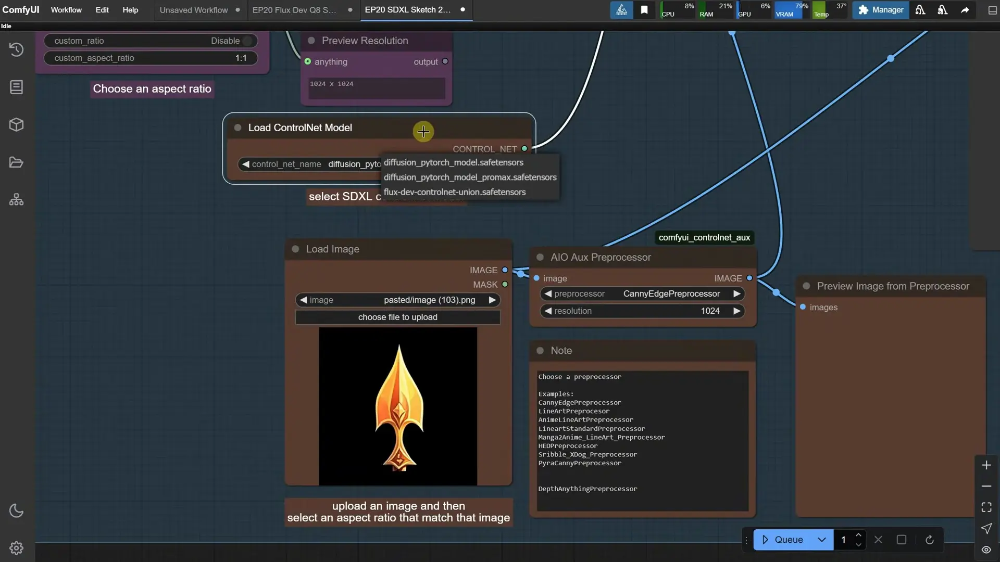